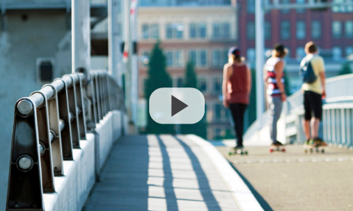

About
We are small Australian skateboard company who specialize in making boards for riders who believe in the dream of skateboarding. The idea for the board42 came to the team while brainstorming how to shoot and create a video documenting the true natural feeling a skateboarder has with his board and the rituals they possess.
Designed in San Francisco by three guys (Dave, Mike and Saen) who have a passion and incredible stamina for skateboarding. Our boards are designed out of recycled old skateboards, and handcrafted to best suit each buyers needs.
Designed for skaters who believe in the natural feel of a broken in board. Our product is designed, built and quality tested to be best suited for a true skaters needs.
